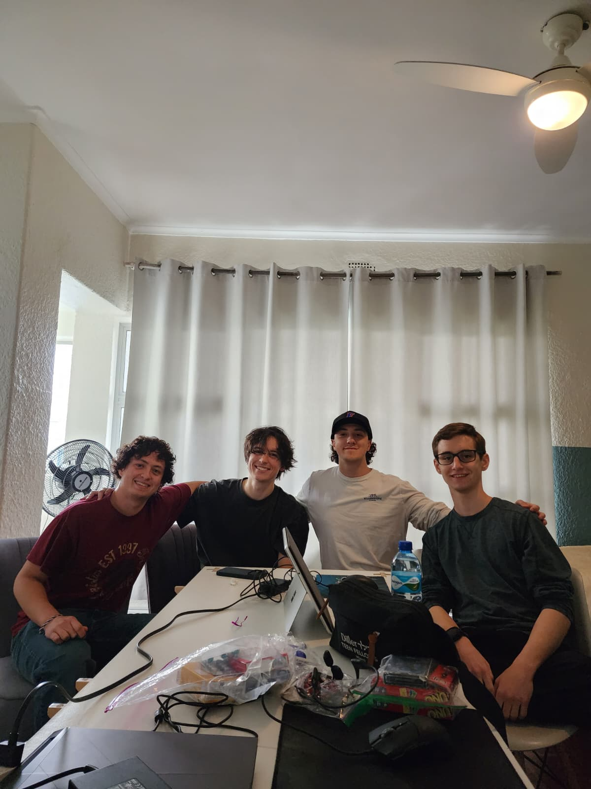

Personal Account — Summer 2026
Reflections
I went into this program open minded, without a firm idea of what to expect. There was some nervousness too, mostly around whether I would enjoy six weeks away from home and whether I had enough experience to hold my own on a real client project instead of a classroom assignment.
Landing
I went into this program open minded, without a firm idea of what to expect. There was some nervousness too, mostly around whether I would enjoy six weeks away from home and whether I had enough experience to hold my own on a real client project instead of a classroom assignment.
Landing in Cape Town was the first thing that caught me off guard. Coming from a state as flat as Florida, seeing mountains sitting in the distance the moment the plane touched down was something I had never experienced. The city itself felt like a mix of familiar and different. It never felt like I had landed somewhere I was totally clueless about, but there was enough that was new to keep me genuinely engaged.
Macks and Johnny, our guides for the trip, met us as soon as we got off the plane and spent the first few days talking to us about their lives in Cape Town and pointing out what we were seeing. My first real adjustment came smaller than expected, realizing after leaving the grocery store that bags were sold separately.
It never felt like I had landed somewhere I was totally clueless about, but there was enough that was new to keep me genuinely engaged.
— First days in Cape Town
The Rhythm of It

We stayed at the Curiosity Hostel on Kloof Street, and I roomed with three other students in a building that housed our whole group along with our TA and tour guides. The weeks fell into a steady rhythm. Most days were spent working on the project, then spending time with friends or teammates around the city. Mondays had an afternoon lecture, Fridays and Saturdays were excursion days, and Sundays were left open for individual exploration or rest. Food became its own kind of exploration too. Nando's is a chain I wish existed back home, and over the six weeks I tried zebra, ostrich, kudu, and springbok, animals I had never had a reason to eat before.
The excursions gave me a different side of the country each time: a safari, ziplining a hundred meters above ground, wine tasting in the vineyards, and watching penguins on the coast. Each one added to how much I came to appreciate being there. Outside of the excursions, simply spending time in the city gave me a better sense of the disparities still present in Cape Town, from the neighborhoods we passed through to the people we saw asking for help on the street. It was a side of the trip that added real context to everything else we experienced there.
The Project Side
On the project side, our team spent a lot of the six weeks learning what it actually meant to build software for people who were not necessarily tech savvy. Dr. Thomas told us early on that our chatbot needed to be as simple as possible to use, and every week that followed was really just us figuring out what that meant in practice, both from the developer side and the user side.
A lot of my role was testing — repeating the same workflows and edge cases as the bot got fixed and occasionally broken again in the process. It was repetitive at times, and there was not always much to do in parallel given the size of the project, but I was glad to contribute wherever I was needed.
Our clients at Princess Vlei Forum treated us professionally despite our relative inexperience, and our TA, Alanis Castillo, was always available whenever we ran into a wall.
What Actually Changed

What actually changed in me was smaller than I expected going in. I noticed how much more relaxed the social interactions were in Cape Town, including greetings that typically get skipped in the rush of American culture. At restaurants, people would greet the staff before placing an order, and businesses in general did not move with the same urgency I am used to.
I have noticed myself doing the same thing since coming back, talking to more people day to day and genuinely looking forward to reconnecting with the friends I made once fall comes around.
What actually changed in me was smaller than I expected going in.
— Looking back
Looking Forward
By the end of the six weeks, I was ready to see my family and friends again, though I would have been glad to continue the experience longer. Between contributing to a project that a real community will use and adjusting to a different pace of daily life, this program gave me a clearer sense of how I want to approach both my coursework and my career going forward.
Nathan Waisserberg